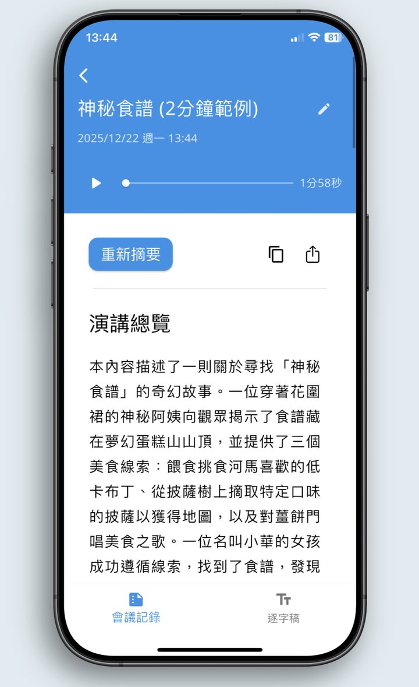

錄音結束，1 分鐘拿到完整會議紀錄
免登入、免訂閱，錄音只留在你的手機
下載即贈 3 小時
4.9 App Store 評分 1,000+ 次下載（Google Play）

免登入、免訂閱，錄音只留在你的手機
下載即贈 3 小時
4.9 App Store 評分 1,000+ 次下載（Google Play）

想專心討論，卻得分心做筆記
希望專注聆聽，但需完整記錄每句話
非母語好難懂，語速快跟不上
Dopi Note 是一款 AI 會議紀錄 App，錄音結束 1 分鐘內產出逐字稿與摘要。免登入、免訂閱，錄音只存在你的手機；支援多種摘要樣板與輸出格式，iOS 與 Android 皆可用。
絕對安全。您的隱私是我們的第一要務： • 音檔不離機 → 原始錄音檔永遠只儲存在您的手機裡 • 資料可離線 → 切換為本機模式，所有資料就只存在手機 • 雲端有加密 → 登入後，文字資料加密備份，方便跨裝置使用
• 免費開始 → 下載即贈 3 小時免費時數 • 無訂閱壓力 → 沒有月費或年費，採時數方案，用多少買多少，額度永不過期
登入是為了讓您更方便： • 跨裝置同步 → 在手機、平板上無縫接軌，存取所有筆記 • 自動備份 → 安全備份您的心血，換手機也不怕遺失
• AI 自動識別 → 您不用做任何事，App 會自動識別多國語言 • 摘要自動翻譯 → 摘要會自動翻成您慣用的語言，讓您秒懂外語會議！
沒有限制！不過建議長會議可以分段錄，效果最好也方便管理。
AI 會自動選擇最適合的格式。您也可以選擇精簡、詳細、條列、行動項目或自訂格式。
超簡單，兩種方式： • 從任何 App 分享 → 在 LINE、雲端硬碟中點「分享」即可 • 從 App 內匯入 → 點擊「+」號，直接選取手機檔案（支援 mp3, m4a, wav 等格式）
一鍵分享！可以存成 Word, PDF, TXT 純文字檔，或直接複製內容傳給別人。
Dopi Note 以超靈活摘要格式、本機模式隱私保護、彈性時數計費三大特色脫穎而出，無需訂閱。
AI 辨識準確度會受錄音品質影響。在安靜環境、清晰收音的情況下，準確度非常高。建議錄音時將手機靠近說話者，避免過多背景噪音，即可獲得最佳效果。
不會。您的錄音與筆記僅供您個人使用，我們不會將任何使用者資料用於 AI 模型訓練。您的隱私是我們的最高原則。
下載Dopi Note - 把時間還給你